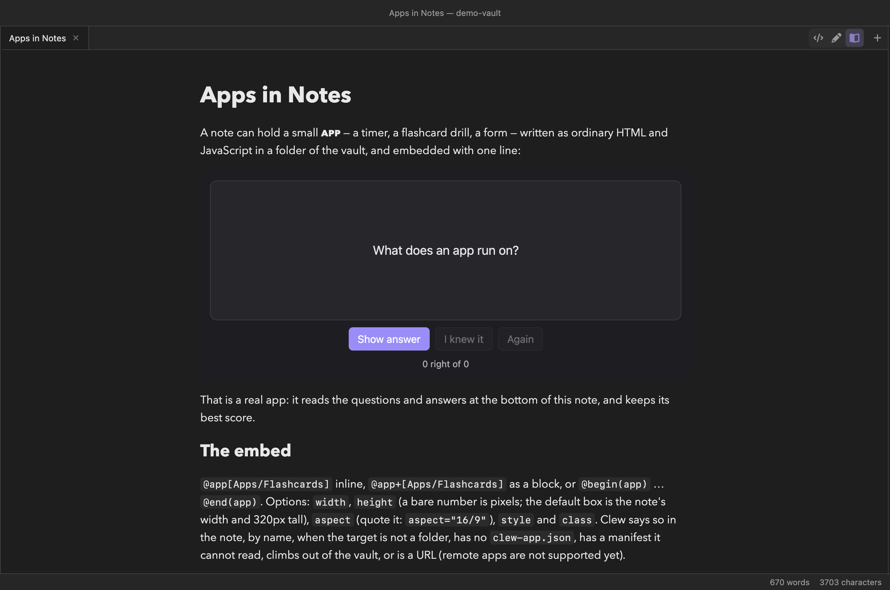
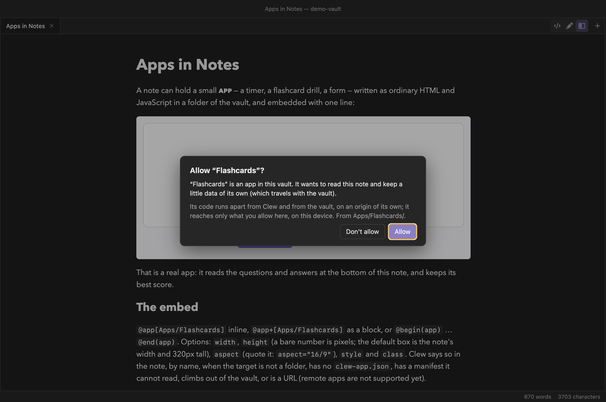

Extending Clew
Apps in notes
A note can hold a small app — a timer, a flashcard drill, a form — written as ordinary HTML and JavaScript in a folder of the vault and embedded with one line. Unlike a note's own scripts, an app runs apart from Clew and from the vault, on an address of its own, and reaches only what you allow it, on this device — so apps work even in a vault you have not trusted. (Not in 0.12.0.)


Embedding an app
You write
@app+[Apps/Flashcards]{height=300}
@app[Apps/Flashcards] is the inline form,
@app+[…] the block form, and @begin(app) …
@end(app) takes the folder as its body. Either way the app
is drawn as a box the width of the note. The folder is a path from the
vault's root, not from the note. The braces take
width (the note's width by default), height
(320 pixels by default; a bare number is pixels), aspect
(quoted: aspect="16/9"), style,
class, and pin (below).
An app runs in reading mode. In live edit
an @app on a line of its own, and the
@begin(app) form, run too, in a frame like a diagram's,
after the same question; an @app[…] in the middle of a line
of text shows only its folder's name there — reading mode runs it.
Source mode shows the line as written. When the line names something Clew
cannot run, the note says why in its place — the folder is missing, is
a file, has no clew-app.json or a manifest Clew cannot
read, climbs out of the vault, or is a web address (remote apps are
not supported yet — an app is a folder in this vault).
Pinning an app to the edge of the pane
You write (at the end of a note)
@app+[Apps/Ticker]{height=150 pin=bottom}
pin=bottom holds the app along the bottom of the pane while
you read above its place in the note; pin=top holds it along
the top once you have scrolled past its place. At its place it sits in
the note like any other. So a ticker pinned at the end of a note runs
along the bottom all the way down, and a timer pinned near the top stays
in view once you have read past it. Both forms take it:
@app+[…]{pin=…} and @begin(app){pin=…}.
A pin works in reading mode and in live edit, and only within its own note: the app is held at the edge of the pane showing that note, over the note's own background, and nowhere else. Held or let go, the app keeps running as it was — it is never reloaded. In live edit the cursor is kept clear of a band pinned at the bottom: the note scrolls so that the line you are typing is never under it. A website export shows the usual line in the app's place, unpinned.
An app's folder
An app is a folder holding an HTML page, its scripts and styles, and a
clew-app.json that says what it is:
Apps/Flashcards/clew-app.json
{
"id": "flashcards",
"name": "Flashcards",
"version": "1.0.0",
"entry": "index.html",
"capabilities": ["note.read", "app.kv"]
}id(required)- The app's identity: 1–64 of
a–z,0–9,.,_and-, starting with a letter or digit. What you allow is kept against the id, not the folder, so an app moved to another folder keeps its answers. Two folders in one vault with the same id are both refused, never the first of them: Two apps in this vault say they are "…" — give one a new id in its clew-app.json. name- What the prompt and Settings call it; the id if absent.
version- For your own records; a new version does not ask again by itself.
entry- The page to open, inside the folder;
index.htmlif absent. capabilities- What the app asks to do (below); nothing if absent.
network- With the
networkcapability, a list of the web origins it may reach —["https://api.example.org"]; without the list, any host.
Where an app runs
Each app runs in a frame on an origin of its own, one for each app in
each vault. It loads only the files of its own folder; it cannot read
the vault's files, Clew's page or the note around it except through the
calls you allow; it cannot open windows, leave its own address or
download; and without the network grant it can reach no
other host — not even to load an image. Its browser storage is its own,
on this device. An app's folder can move within the vault and keep what
you allowed it; the same vault moved elsewhere starts over.
Allowing an app


The first time an app wants something, Clew asks — once for each app, covering everything it asks for: Allow grants all of it, Don't allow none. The window draws the question itself, outside every frame, so the real question never comes from inside an app. In a trusted vault an app starts at once: one that asks for nothing is not asked about, and one you do not allow still runs, without what it asked for.
The question, not Allow, has the keyboard focus. A prompt can appear while you are typing — an app's box is drawn a moment after its line — and a key pressed just then answers nothing. Choose with a click, or Tab to a button and press Enter.
In a vault you have not trusted, an app does not start until you answer, even if it asks for nothing (It wants to run here.) — and a Don't allow is remembered. There an app that may use the network is also held to the code you allowed: if its files change, it asks again (“…” has changed since you allowed it.). A vault whose only code is apps never asks to be trusted: each app asks for itself.
The answers are kept on this device, for each vault
and each app, never in the vault: a vault you send someone arrives with
no grants. When a later version of an app asks for more, only the new
capabilities are asked about, and an app that is running when you allow
them keeps running — it hears grant-changed. Whatever is
taken away — a capability, its right to run, or its network either way —
closes the app and reloads it.
A network grant covers only the hosts the manifest named
when you allowed it (or any host, for an app whose manifest named none —
its prompt says send data to any host on the internet). If the
manifest later names another host, Clew asks about that host alone, and
the app reaches nothing new until you answer; Don't allow
refuses just the new host and is not asked again. A host the manifest
stops naming is no longer reached, at once. In a vault you have not
trusted, any change to the app's files asks again about everything, as
above. (A network grant made by a test build before 4 October 2026
is asked about once more.)
What an app may ask for
| Capability | The prompt says it wants to… | What it allows |
|---|---|---|
note.read | read this note | Read the note it is embedded in, and its properties |
notes.read | read the notes in this vault | The same for any note — never a hidden file or .clew/ |
query | search this vault and read its index | List the notes, search, read a note's headings, links, tags and backlinks |
app.kv | keep a little data of its own (which travels with the vault) | Keys and values in the vault's clewdata.json, under its own id |
app.secrets | keep secrets, such as an API key, on this device only (never in the vault) | Short named strings of its own, encrypted on this device (below) |
app.files | keep files of its own in its data folder (which travel with the vault) | Files in its folder's data/: 25 MB a file, 250 MB in all, never a note |
links.open | open notes and links | Open a note in a new tab, or a web or mailto: link outside Clew |
note.write | edit this note | Replace, append to, or set a property of its own note |
notes.write | edit the notes in this vault | The same for any note |
notes.create | create notes | Create a new note — never overwriting one that exists |
editor.insert | insert text where you are typing | Insert at the cursor of the note's editor |
find | take part in Find | Open Find in the note with a query, and hear what you search for there |
clipboard | copy and paste through Clew | Copy text, and read what you have copied |
network | send data to the internet (or: to the hosts it names) | Fetch, load and connect beyond its own folder |
When an app asks both to read and for the network, the prompt says so in a sentence of its own: It asks both to read and to send data out.
An app's edit is an ordinary edit
An app edits a note through Clew's own editor. If the note is open in source mode or live edit, the change lands there as if typed: the tab shows it unsaved, it saves as usual, and ⌘Z takes it back. If the note is not open in an editor, Clew opens it unseen, makes the change and saves it at once. Either way note history keeps the text it had. A note with an unresolved conflict refuses the edit until you resolve it. A note an app creates is written straight to disk, and never over one that exists.
Writing an app
An app is a web page, and Clew gives it one object, clew,
in every page of its folder; nothing needs importing. The smallest
useful app is a page and a manifest asking for note.read:
Apps/Words/index.html
<!doctype html>
<meta charset="utf-8">
<p id="out">…</p>
<script>
clew.ready.then(async () => {
const text = await clew.notes.read();
out.textContent = text.split(/\s+/).filter(Boolean).length + ' words';
});
</script>
clew.ready resolves when the app has been answered, with
what it was granted, and fails if it may not run here.
clew.can(name) says whether a capability was granted;
clew.context() gives the note's path, the theme and the
vault's name; and clew.on(name, fn) hears
theme (the theme changed), find (what you
searched for in the note), note-changed (its note was saved
— by you, a sync or another app; at most once every quarter of a second,
and only to an app that may read the note), grant-changed
(you allowed it more; the event brings the new list, and the app keeps
running) and closed. The demo's Flashcards listens for
note-changed and re-reads its cards.
| Calls | Need |
|---|---|
clew.notes.read(path?), clew.properties.get(path?) | note.read; another note's path, notes.read |
clew.notes.list(), clew.search(text), clew.index.get(path), clew.index.backlinks(path?) | query |
clew.kv.get / set / delete / list | app.kv |
clew.secrets.get(name) / set(name, value) / delete(name) | app.secrets |
clew.files.list / read / write / delete / mkdir | app.files |
clew.open(target) | links.open |
clew.notes.write(path, text), clew.notes.append(path, text), clew.properties.set(path, key, value) | note.write; another note, notes.write |
clew.notes.create(path, text) | notes.create |
clew.editor.insert(text) | editor.insert |
clew.find.show(query) | find |
clew.clipboard.copy(text), clew.clipboard.paste() | clipboard |
A path of null means the app's own note. Every call returns
a promise; a refused one rejects with an error whose code
says why — denied, not-found,
conflict, too-large, too-many,
rate-limited, bad-params,
unavailable — and whose message says it in words
(notes.write needs "note.write", which this app has not been granted
here). Grants are checked at every call, so one taken back in
Settings stops the next call. The limits: a request of 1 MB (a
file of 25 MB), a note or a write of 1 MB, a stored value of
256 KB (a secret, 8 KB), 32 calls waiting at once, 50 a second, and 5 writes a
second; a call with no answer in 30 seconds fails. The network grant
adds no call: the app uses the browser's own fetch.
Secrets
What an app keeps with app.kv or app.files is
in the vault, for anyone who has the vault. A password or an API key
belongs with app.secrets instead: Clew keeps it for that
app, in that vault, on this device only, and never
writes it into the vault, a log or an error message.
clew.secrets.get(name) gives the value, or
null when there is none; set(name, value)
keeps a string, and delete(name) says whether there was one
to remove. A name is 1 to 64 letters, digits, .,
_ or -; a value is at most 8 KB, and an
app keeps at most 32 (bad-params, too-large,
too-many). set and delete count
as writes. An app without the grant gets denied from every
call, never a value.
Another app cannot read them, and nor can the same app in another
vault. They are encrypted on disk, in Clew's own data: on a Mac with a
key macOS keeps in the Keychain, on Windows by Windows' own data
protection, and on Linux only through a keyring. Linux without one
keeps no secrets at all (unavailable) rather than keep
them unencrypted. Revoke in
Settings deletes an app's secrets with its
answers, and Forget in
Trusted vaults
deletes every app's secrets for that vault.
Six examples
The demo vault's Features/App Gallery note embeds six apps,
each a folder under Apps/ of plain HTML, CSS and
JavaScript with no libraries, asking for only what it uses. They are
there to be read and copied:
| App | What it does | Asks for |
|---|---|---|
Stock Ticker (Apps/Ticker) |
A ticker band of the symbols in a table in its note, pinned along the bottom of the pane (pin=bottom): simulated, live US quotes, or the ECB's rates (below) |
note.read, app.kv, app.secrets (the key), and network to finnhub.io and api.frankfurter.dev only — used only in the live modes |
Replicator Dynamics Lab (Apps/Replicator) |
The replicator dynamics of a 2×2 or 3×3 game, its rest points classified; Insert result writes a summary at your cursor | editor.insert |
Seminar Picker (Apps/Picker) |
A wheel of the names in its note, everyone a turn before anyone a second; copies the name | note.read, app.kv, clipboard |
Lecture Timer (Apps/Timer) |
A countdown that, when it runs out, appends a dated line to its note | note.write |
Writing Progress (Apps/Progress) |
The note's word count against a daily goal, updated on every note-changed |
note.read, app.kv |
Reading List (Apps/ReadingList) |
Every note with status: to-read; a click opens one |
query, notes.read, links.open |
The ticker has three modes. Simulated, the default, uses no network: the prices start from the numbers in the note's table — invented, not the market — and drift by a seeded random walk. Live stocks shows real US quotes from Finnhub, each symbol refreshed about once a minute, the band giving the time of the last update, or Closed · as of … when the market is shut. It needs your own free Finnhub key: choose Key… in the app and paste it. Clew keeps the key as the app's secret, on this device and never in the vault, so it does not travel with a copy you share. If you do not allow it to keep secrets, the key lasts this session only, and the app says so. Forget key removes it, and without a key the mode says where to get one. ECB rates shows the euro's reference rates from the European Central Bank.
The ticker also shows the limit of one question per app: you cannot allow it the note and the watchlist but not the network. Don't allow declines everything it asks for.
Settings
Settings → This vault → Apps, below the plugins, lists each app the vault carries, with its folder and what this device lets it do, and the notes it is open in now — not asked yet, allowed to run, allowed: … with what it may do, not allowed to run, or refused when two folders share its id. Revoke forgets every answer about the app and deletes its secrets: it stops, reloads, and asks again. There is no other control — to change an answer, revoke it and answer anew.
While an app that may change notes is open — one allowed
note.write, notes.write,
notes.create or editor.insert — the status bar
says so: ✎ Writer can edit notes, or ✎ 2 apps
can edit notes. Its tooltip names them; a click opens
Settings → This vault → Apps, where
Revoke is.
What an app cannot do
An app never reaches Node.js, anything under .clew/,
Clew's settings or plugins, Clew's commands, a hidden file, or another
app's data, and in a vault you have not trusted it reads nothing
outside the vault. What it can do is all on the list above, and only
what you allowed.
Three things it can still do are worth saying plainly. It can draw
anything inside its own box — including something that looks like one
of Clew's questions; Clew's real ones are drawn by the window, over
everything, and never inside an app's box. The network rule does not
reach WebRTC, the browser's machinery for direct connections, so a
determined app without the grant may still get a little data out that
way. And what it keeps with app.kv and
app.files travels with the vault, so whoever has the vault
has its data; only its secrets stay on this
device.
In exports
An app needs Clew to run, so it does not travel into an export. A
website export puts a line in its place —
Apps/Flashcards — an app that runs inside Clew, not on a
website. — and copies the app's code with its folder, but not what
the app keeps: neither its data/ folder nor the vault's
clewdata.json, where app.kv keeps its values, is
published. (A data/ folder that is not inside an app is
ordinary vault content, and goes out like any other.) A single note's
HTML or LaTeX
export prints the folder's path as text, and
the reading-view PDF prints the app's placeholder.
Reference
| Item | Detail |
|---|---|
| Embed | @app[Folder], @app+[Folder]{height=…}, @begin(app) Folder @end(app) — a path from the vault's root |
| Manifest | clew-app.json: id (required), name, version, entry (index.html), capabilities, network |
| Same id twice | Both folders refused |
| Live edit | An @app on a line of its own, or @begin(app), runs in a frame; in the middle of a line of text, only its name shows |
| Pin | {pin=top} or {pin=bottom}: held at that edge of the pane while its place is out of view there — reading mode and live edit, within its note; never reloaded |
| The question | Allow “…”? — once per app, for all it asks: Allow / Don't allow; in a restricted vault, before it starts. The focus is on the question: a click, or Tab to a button and Enter |
| Network grant | Bound to the hosts named when it was allowed; a new host is asked about alone, a dropped one no longer reached |
| Where answers are kept | app-grants.json in Clew's own data on this device — never in the vault |
| Secrets | clew.secrets with app.secrets: per app, per vault, on this device, encrypted (app-secrets.json); names of 1–64 [A-Za-z0-9._-], 8 KB a value, 32 an app; deleted by Revoke, and by Forget for the vault |
| Settings | This vault → Apps: each app's state and the notes it is open in; Revoke |
| Status bar | ✎ … can edit notes while an app that may change notes is open; click for Settings |
| Events | clew.on: theme, find, note-changed, grant-changed, closed |
| Its own data | app.kv in clewdata.json; app.files in its folder's data/; app.secrets on this device only |
| Never | Node, .clew/, commands, settings, hidden files, another app's data |
| Examples | The demo vault's Features/App Gallery: six apps in Apps/ |
See also
- Trusting a vault
- The Note API — scripts that run in the note itself, in a trusted vault
- Vault plugins